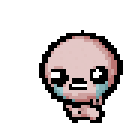

Me chamo João Marcos de Assis Soares, e tenho 16 anos. Comecei a formação em
Ciência da Computação pela UFFS em 2021, e não tive experiências concretas
com essa carreira profissional anteriormente, porém, estou gostando e disposto
a aprender cada vez mais.
Já possuo experiência com Python, e consigo fazer pequenos trabalhos em HTML e CSS.
Experiências em geral:
2017 e 2019: Medalha de Bronze na 13a e 15a OBMEP (Olímpiada Brasileira de Matemática das Escolas Públicas;
2018: Medalha de Ouro na 2a OMOC (Olímpiada de Matemática do Oeste Catarinense);
2018 e 2020: Cursou o PIC (Programa de Iniciação Científica Jr.), sendo bolsista do CNPq;
2018: 2o lugar na Startup Teens 2018, promovida durante a 4a CRIE (Conferência Regional de Inovação e Empreendedorismo).

Hobbies
Gosto muito de música (ouçam Gorillaz) e toco alguns instrumentos, como violão e baixo. Também gosto de sofrer com jogos indie
(principalmente The Binding of Isaac e Darkest Dungeon), além de Rocket League e Battlefield (4 e V);
Pratico voleibol, e também não recuso se me chamarem pro futebolzinho;